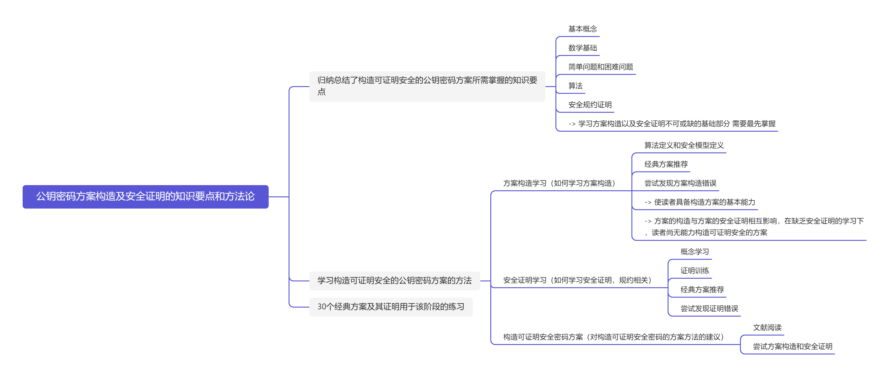

荔枝橙味拱腰觅马糕守
本篇文章旨在记录笔者阅读《公钥密码方案构造及安全证明的知识要点和方法论》的学习总结和收获

Introduction
归纳总结了构造可证明安全的公钥密码方案所需掌握的知识要点
基本概念
数学基础
简单问题和困难问题
算法
安全规约证明
-> 学习方案构造以及安全证明不可或缺的基础部分 需要最先掌握
学习构造可证明安全的公钥密码方案的方法
方案构造学习（如何学习方案构造）
算法定义和安全模型定义
经典方案推荐
尝试发现方案构造错误
-> 使读者具备构造方案的基本能力
-> 方案的构造与方案的安全证明相互影响，在缺乏安全证明的学习下，读者尚无能力构造可证明安全的方案
安全证明学习（如何学习安全证明，规约相关）
概念学习
证明训练
经典方案推荐
尝试发现证明错误
构造可证明安全密码方案（对构造可证明安全密码的方案方法的建议）
文献阅读
尝试方案构造和安全证明
30个经典方案及其证明用于该阶段的练习
知识要点
两本书籍《Modern Cryptography: Theory and Practice》，《INTRODUCTION TO MODERN CRYPTOGRAPHY》
基本概念
复杂性理论
时间复杂度
- L-notation(Landau Notation)：也成为渐进符号，主要用于描述算法的时间和空间复杂度的增长趋势；包括 $O()\ \Omega()\ \Theta()$，分别表示算法在 最坏、最好和平均情况下的时间或空间复杂度；$\Omega()$ 表示算法的 下界，$\Theta()$ 表示算法的 精确界。
- Probabilistic Polynomial Time (PPT)：指可以在多项式时间内通过概率算法解决的问题。概率算法在某些情况下可能会给出错误的答案，但运行时间是多项式级别的。如：蒙特卡洛算法。
- Sub-exponential Time：亚指数时间，指的是算法的运行时间比指数增长慢但比多项式时间快，通常表示为 $2^{o(n)}$，是介于多项式时间和指数时间之间的复杂度。如：$n^{log\ n}$是亚指数时间，但 $2^n$ 是指数时间。
- Exponential Time：指数时间，指算法的运行时间随着输入规模 $n$ 的增加呈指数增长，常用形式如 $O(2^n)$ 或 $O(c^n)$ （其中$ c>1$）。这类算法运行时间增长非常快。如：旅行商问题 $O(n!)$。
计算复杂性
P (Polynomial Time)：多项式时间类。所有能够在多项式时间内解决的问题的集合。如：快速排序和归并排序。
NP (Nondeterministic Polynomial Time)：非确定性多项式时间类。可以容易验证解是否正确，但难以找解。如：子集和问题，如果给定一个可能的解，可以快速验证它是否正确，但找到该解的过程可能非常耗时。如：起点到终点是否有至少一条小于100个单位长度的路线。（所有P类问题都是NP问题）
NPC (NP-Complete)：NP 完全问题。这是一类最难的 NP 问题，所有 NP 问题都可以通过多项式时间归约到这类问题。如：旅行商问题（判定版本）、3-SAT 问题
NP-Hard ：NP难问题至少和NP问题一样难，可能更难；NP难问题不一定是NP问题，也就是说，它们的解不一定能够在多项式时间内验证。如：旅行商问题、停止问题（Halting Problem）（给定一个程序和输入，判断程序在这个输入上是否会停止）
计算模型相关术语
- Computation Model (计算模型)：这是定义如何进行计算的理论框架，用于定义什么可以被计算和如何计算。如“”模型包括图灵机、随机存取机（RAM）和有限状态自动机等。
- Turing Machine (图灵机)：由计算理论之父艾伦·图灵提出的抽象计算模型。由一个无限长的纸带（表示内存）和一个读写头组成。图灵机的每一步计算由状态和符号决定，能够通过改变符号和移动读写头来执行计算。图灵机是复杂性理论中用于定义可计算性和时间复杂度的基础模型。
攻击
Birthday Attack（生日攻击）
- 攻击对象：哈希函数
- 攻击目标：找到两个不同的输入具有相同的哈希值（哈希碰撞）。
- 例子：对 MD5 哈希函数进行生日攻击，攻击者可能找到两个不同的消息产生相同的哈希值，从而进行数字签名伪造或文件篡改。
Man-in-the-middle Attack (中间人攻击)
- 攻击对象：通信协议（特别是缺乏认证的加密协议）
- 攻击目标：拦截并篡改双方之间的通信，而通信双方并不察觉。
- 例子：攻击者在 Alice 和 Bob 之间建立两个独立的加密会话，拦截并解密他们发送的消息，然后篡改内容再发送给对方。
Brute-force Attack (暴力破解攻击)
- 攻击对象：密码或加密密钥
- 攻击目标：通过穷举所有可能的组合找到密码或密钥。
- 例子：对使用短位数密码（如 4 位数字 PIN）的系统，攻击者可以尝试所有 10000 种可能的组合，直到找到正确的密码。
Eavesdropping Attack (窃听攻击)
- 攻击对象：未加密或不安全的通信
- 攻击目标：窃听通信内容，获得敏感信息。
- 例子：攻击者在未加密的 Wi-Fi 网络上捕获用户发送的明文密码或信用卡号。
Meet-in-the-middle Attack
- 攻击对象：双重加密系统（如 2DES）
- 攻击目标：通过分别攻击加密的前半部分和后半部分，减少破解加密所需的时间。
- 例子：攻击 2DES，攻击者使用一个中间状态同时攻击加密的前半部分（第一轮加密）和后半部分（第二轮加密），从而减少暴力破解的时间复杂度。
Collusion Attack (共谋攻击)
- 攻击对象：多方协议或共享资源的系统
- 攻击目标：多个恶意方合作以欺骗系统或窃取信息。
- 例子：在分布式投票系统中，多方共谋可以合谋修改投票结果或操纵选举。
Side-channel Attack (旁道攻击)
- 攻击对象：硬件实现的加密算法
- 攻击目标：通过观察硬件泄露的信息（如电磁辐射、功耗、运行时间）来推测密钥或加密数据。
- 例子：攻击者通过测量加密设备的功耗，推测出设备运行不同指令时的耗电差异，从而推测出加密密钥。
Statistical Attack (统计攻击)
- 攻击对象：加密算法或协议
- 攻击目标：通过分析加密文本或通信中不同部分的统计特性来破译密文或找到加密弱点。
- 例子：攻击者通过分析加密文本中字符的频率，破译简单替换密码，因为某些字母（如英文中的 “e”）出现频率较高。
Replay Attack (重放攻击)
- 攻击对象：认证协议或通信协议
- 攻击目标：通过截获和重放有效的数据包来伪装合法用户。
- 例子：攻击者截获并重放用户登录系统时发送的认证请求，从而在不知晓密码的情况下再次登录。
Rainbow Attack (彩虹表攻击)
- 攻击对象：加密的密码或哈希值
- 攻击目标：通过使用预先计算的哈希表（彩虹表）来反向查找密码。
- 例子：攻击者使用彩虹表匹配存储的 MD5 哈希值，找到对应的明文密码，从而绕过系统的哈希加密机制。
基本工具
- 单向函数 (One-way Function)
输入：任意大小的输入值（通常是整数或比特串）。
输出：固定长度或与输入长度相关的输出值。
输入输出关系：单向函数易于从输入计算输出，但从输出反推出输入非常困难（计算上不可行）。
应用场景：单向函数是许多密码学协议（如哈希函数、数字签名、密码算法）的基础。常见应用包括：
- 密码散列
- 认证机制中的口令验证
- 零知识证明中的承诺方案
- 密码散列
陷门单向函数 (Trapdoor One-way Function)
输入：任意大小的输入值和一个“陷门”信息（通常是密钥）。
输出： 固定长度或与输入相关的输出值。
输入输出关系：在没有陷门信息的情况下，从输出推回输入非常困难；而有陷门信息时，可以有效地反推出输入。
应用场景：陷门单向函数广泛应用于公钥加密和数字签名。例如：
- RSA加密：只有拥有私钥的用户能够轻松解密用公钥加密的消息。
- 数字签名：签名者使用私钥进行签名，验证者使用公钥验证签名。
伪随机函数 (Pseudo-random Function, PRF)
- 输入：一个密钥和一个输入值（通常是比特串）。
- 输出：一个伪随机的输出值，类似于随机数生成器的输出。
- 输入输出关系：PRF 生成的输出看起来像随机的，但它是确定的，即对于同一个密钥和输入，输出总是相同的。只有拥有密钥的用户能够区分伪随机输出和真实随机输出。
- 应用场景：PRF 被广泛用于对称密钥加密、消息验证码 (MAC)、伪随机数生成、以及密钥派生函数 (KDF) 中。
- 输入：一个密钥和一个输入值（通常是比特串）。
哈希函数 (Hash Function)
输入：任意长度的输入数据。
输出： 固定长度的哈希值。
输入输出关系：哈希函数将任意长度的输入映射到固定长度的输出。理想的哈希函数具有抗碰撞性，即找到两个不同输入映射到同一输出的概率应该非常低。
应用场景：
- 数据完整性：用于校验数据是否被篡改（如SHA-256用于数字签名）。
- 密码存储：存储用户密码的哈希值，而不是明文密码。
- 区块链：用来确保区块内容的不可篡改性。
硬核谓词 (Hard-core Predicates)
- 输入：单向函数的输入值和输出值。
- 输出： 比特值（0或1）。
输入输出关系：对于给定的单向函数 $f$ 和输入 $x$，计算 $f(x)$ 很容易，但对于某些特殊比特（称为硬核谓词），即使知道$f(x)$，要猜出该比特的值也非常困难。
- 应用场景：硬核谓词用于设计更加安全的加密协议，如流密码生成器中的位选择机制。常见的硬核谓词包括 Blum-Micali 伪随机生成器中的二次剩余判定。
熵函数 (Entropy Function)
- 输入：概率分布或随机变量。
输出：熵值（衡量随机变量的不确定性或信息量，通常以比特为单位）。
输入输出关系：熵函数给出输入随机变量的不确定性度量，熵越大，信息越难预测；熵越小，信息越确定。
应用场景：
- 密码安全性评估：用于评估随机数生成器的质量。
- 信息论：熵函数用于分析通信系统中传递信息的有效性。
- 数据压缩：根据数据的熵来决定最佳的压缩算法，如Huffman编码。
认证
加密
模型
Random Oracle Model（随机预言机模型）
- 概念：将哈希函数视为一个理想化的随机预言机，即每次查询哈希函数时都会返回一个随机值，不考虑实际哈希函数的实现细节。
- 应用场景：这个模型通常用于证明密码方案的安全性，尤其是在设计签名算法、加密方案或零知识证明时，随机预言机模型简化了安全分析。例如，很多实际使用的加密方案，如RSA-OAEP和HMAC，在这个模型下被证明是安全的。
- 优点：可以简化安全性证明并提供很强的安全性保证。
- 局限性：实际中的哈希函数并不是理想的随机预言机，因此在现实中可能存在攻击漏洞。
Standard Model（标准模型）
- 概念：不依赖随机预言机等理想化的假设，而是依赖于基于已知的数学问题（如离散对数、因数分解等）的假设进行安全性证明。
- 应用场景：标准模型下的安全性证明更接近现实，通常用于密码学协议的严格安全性分析。例如，基于困难数学问题（如RSA、Diffie-Hellman）的加密和签名方案，通常在标准模型下证明其安全性。
- 优点：提供更为现实的安全性保证，避免使用理想化的假设。
- 局限性：安全性证明往往更复杂，并且可能导致效率低下的方案。
Common Reference String Model（公共参考字符串模型）
- 概念：在这种模型中，所有参与方在协议开始之前都会共享一个公共的随机字符串，该字符串由一个可信方生成。
- 应用场景：该模型经常用于零知识证明系统和多方安全计算（MPC）中。公共参考字符串用于保证协议的正确性和安全性。例如，Groth-Sahai证明系统就依赖于这个模型。
- 优点：简化了复杂密码协议的设计，并提供强大的安全性。
- 局限性：公共参考字符串需要由一个可信第三方生成，如果其生成过程不安全，整个系统的安全性将受到威胁。
Security Model（安全模型）
- 概念：安全模型是用来定义密码协议在特定攻击场景下的安全性。常见的安全模型包括选择密文攻击（CCA）安全模型、选择明文攻击（CPA）安全模型、完全前向安全模型等。
- 应用场景：不同的安全模型适用于不同类型的密码协议。例如，针对加密协议的选择密文攻击（CCA）安全模型广泛应用于分析公共密钥加密方案的安全性，如RSA、ElGamal等。选择明文攻击（CPA）模型则用于较弱的攻击假设下的分析。
- 优点：通过不同的攻击模型，研究者可以更精细地评估协议在不同攻击情境下的安全性。
- 局限性：模型之间的安全性可能不一致，需要针对特定的威胁模型进行全面分析。
Generic Group Model（通用群模型）
- 概念：假设在这个模型中，攻击者不能直接操作群元素，只能通过一个黑盒进行群运算。这种模型假设攻击者无法利用群的具体结构信息，而只能使用通用的群操作。
- 应用场景：通用群模型通常用于证明基于群的密码协议（如椭圆曲线密码学、Diffie-Hellman等）的安全性。这个模型对分析与离散对数问题相关的加密方案（如Diffie-Hellman协议）特别有用。
- 优点：简化了分析过程，并能提供对基于群的方案的广泛适用性。
- 局限性：在现实中，攻击者可能能够利用群结构的具体性质，从而使得通用群模型中的安全性证明无法完全反映实际的安全性。
第三方实体
Key Distribution Center (KDC) — 密钥分发中心
- 功能：KDC 负责在网络中的各方之间分发对称密钥。它生成并安全地传输会话密钥，确保各方能够使用对称加密进行安全通信。KDC 通常是可信的中心实体，负责管理密钥的分发和更新。
- 应用场景：主要用于对称密钥加密系统中，尤其是在需要多个用户之间进行安全通信的环境下，如：
- Kerberos 协议：KDC 在 Kerberos 协议中生成会话密钥并分发给通信双方，以便实现身份验证和加密通信。
- 企业内部网络安全：KDC 用于集中管理员工设备之间的加密通信。
- 优势：减少了各方之间建立安全通信时需要直接共享密钥的风险。
- 局限性：KDC 成为单点故障，如果被破坏或泄露，整个网络的安全将受到威胁。
Key Generation Center (KGC) — 密钥生成中心
- 功能：KGC 是负责生成公钥和私钥对的中心实体，通常用于基于身份的加密（Identity-Based Encryption, IBE）系统中。KGC 基于用户的身份信息（如电子邮件地址）生成私钥，并分发给用户。
- 应用场景：主要用于基于身份的加密系统，特别是在分布式和多用户环境中，如：
- 电子邮件加密：用户通过其电子邮件地址作为公钥进行加密，KGC 提供私钥解密信息。
- 无需证书的加密系统：KGC 的存在消除了使用传统公钥基础设施（PKI）系统中对证书的需求。
- 优势：无需管理公钥证书，简化了加密系统的管理。
- 局限性：KGC 必须完全可信，因为它能生成所有用户的私钥，可能导致潜在的隐私和安全问题。
Private-Key Generator (PKG) — 私钥生成器
- 功能：PKG 是类似于 KGC 的实体，负责生成用户的私钥。它主要用于基于身份的加密系统中，用户的私钥是由 PKG 根据用户的身份信息生成的。PKG 通常也会生成公钥，但这些公钥是基于用户的身份生成的，而不需要显式地存储或分发。
- 应用场景：用于身份加密系统和签名方案，如：
- Shamir 的身份加密系统：PKG 为用户生成私钥，用户身份作为公钥。
- Pairing-based Cryptography：在基于双线性对的密码学系统中，PKG 负责生成和管理密钥。
- 优势：消除传统 PKI 系统对证书管理的需求，简化了密钥管理过程。
- 局限性：与 KGC 相同，PKG 必须是完全可信的，否则会导致整个系统的安全性崩溃。
Certificate Authority (CA) — 证书颁发机构
- 功能：CA 是公钥基础设施（PKI）中的核心实体，负责验证用户的身份并颁发数字证书。数字证书包含用户的公钥及其身份信息，并由 CA 签名，以证明该公钥确实属于该用户。CA 还负责吊销证书、更新证书和维护证书的有效性。
- 应用场景：CA 广泛应用于互联网安全、身份验证和加密通信场景中，如：
- HTTPS/TLS 协议：CA 颁发 SSL/TLS 证书，确保用户访问的网站是可信的。
- 电子邮件加密（如 S/MIME）：CA 颁发数字证书用于电子邮件加密和签名，确保通信的真实性和机密性。
- 优势：通过数字证书验证公钥的真实性，确保用户之间可以安全通信。
- 局限性：如果 CA 被攻击或误发不安全的证书，整个系统的信任链条会被打破。此外，CA 通常是高度集中化的，这可能导致管理和成本问题。
Trust Third Party (TTP) — 可信第三方
- 功能：TTP 是一种在通信双方之间建立信任的第三方实体，通常负责验证双方身份并促进安全通信。TTP 可以用于密钥分发、身份验证、数字签名认证等场景。
- 应用场景：TTP 常用于分布式系统、电子商务、合同签署等场景中，如：
- 电子合同签名：TTP 验证各方签署的数字签名，并确保合同的真实性和有效性。
- 在线身份验证：TTP 在用户和服务器之间充当中介，帮助进行身份验证。
- 优势：通过引入一个可信的第三方，简化了安全通信的流程，减少了直接信任的需求。
- 局限性：TTP 是一个集中化的实体，如果它被破坏或失去信任，整个系统的安全性都会受到影响。
协议
Key Exchange Protocol — 密钥交换协议
- 应用场景：当 Alice 和 Bob 需要安全通信时，他们需要协商出一个共享密钥，其他第三方无法得知此密钥。典型的例子包括 Diffie-Hellman 密钥交换和 ECDH（椭圆曲线 Diffie-Hellman）。
- 解决的问题：
- 安全共享密钥：协议确保参与方协商出一个共享密钥，用于后续加密通信。
- 防止中间人攻击：通过认证机制（如公钥基础设施）防止恶意第三方伪装成通信参与者。
- 示例：Alice 和 Bob 在一个不安全的网络上协商生成共同的密钥，双方使用密钥进行后续加密通信，避免第三方窃听。
Fair Exchange Protocol — 公平交换协议
- 应用场景：公平交换用于确保两方在协议中公平交换某种数字资产或信息，比如数字签名、加密货币、合同等。典型的应用场景包括电子商务中的支付协议和数字签名的公平交换。
- 解决的问题：
- 确保交易公平：如果 Alice 提供了她的签名或信息，Bob 也必须在相同条件下提供他的。
- 防止单方违约：保证交易的一方无法单方面获得他人的资产或信息而不履行自己的部分。
- 示例：在数字合同签署中，Alice 和 Bob 可以使用公平交换协议确保签署过程公平，即 Alice 和 Bob 都签署合同或都不能签署。
Secret Sharing Protocol — 秘密共享协议
- 应用场景：当一个秘密需要在多个参与方之间分配并保密时使用，通常应用于分布式系统、银行加密、文件恢复等场景。Shamir’s Secret Sharing 是其中的经典协议。
- 解决的问题：
- 安全存储秘密：允许将秘密分成多个部分，每个参与者只拥有一部分，只有足够多的参与者联合才能恢复秘密。
- 容错性：即使部分参与者失去密钥，秘密仍然可以恢复。
- 示例：一个公司董事会需要投票决策，他们可以使用秘密共享协议将密钥分发给多名董事，只有达成多数票数后才能解密决策结果。
Oblivious Transfer Protocol — 遗忘传输协议
- 应用场景：当一方希望从另一方获取部分信息，但不希望让另一方知道他选择了哪部分信息时使用。常见于隐私保护机制、密码学应用和安全多方计算中。
- 解决的问题：
- 隐私保护：在 Alice 从 Bob 获取信息的过程中，Bob 无法知道 Alice 选择了哪些信息。
- 防止过多泄露：确保 Alice 只获取了她请求的部分信息，而不是 Bob 所有的信息。
- 示例：Alice 想从 Bob 那里选择一本书的某一页内容，但 Bob 不知道 Alice 想要哪一页，Alice 也不会看到除她选择之外的其他页。
Commitment Protocol — 承诺协议
- 应用场景：承诺协议用于在信息未公开之前确保其不可更改，常用于加密签名、选举系统、博弈论等场景。
- 解决的问题：
- 防篡改：承诺的值在揭示之前不能更改。
- 保密性：承诺值在揭示之前是保密的，不被他人知道。
- 示例：在电子投票系统中，Alice 对她的投票进行承诺，在投票结束后再揭示，这样她无法在投票期间更改票选。
Multi-party Computation (MPC) — 多方计算协议
- 应用场景：MPC 允许多个参与方在不暴露其输入的情况下，联合计算某一函数的结果。常见应用包括隐私保护数据分析、分布式系统和财务分析。
- 解决的问题：
- 隐私计算：参与者可以合作完成计算而不暴露各自的输入数据。
- 公平性：即使有恶意参与者，也能保证计算结果正确。
- 示例：多家银行可以在不分享客户数据的情况下，通过 MPC 计算某个统计数据，例如总交易额。
Zero-Knowledge Proof (ZKP) — 零知识证明
- 应用场景：ZKP 允许一方（证明者）向另一方（验证者）证明她知道某个秘密信息，但不会泄露该信息本身。ZKP 常用于身份验证、加密货币、区块链技术中。
- 解决的问题：
- 安全验证：证明者可以证明她知道某个秘密或满足某个条件，而无需泄露秘密。
- 隐私保护：在身份验证或认证过程中，敏感信息不会泄露。
- 示例：Alice 可以通过 ZKP 向 Bob 证明她知道一个密码，而无需告诉 Bob 这个密码是什么。
技术方法
Accumulator
- 基本原理：Accumulator 是一种将多个元素“累积”成一个单一值的数据结构，并允许验证某个元素是否包含在该累积值中的过程。Accumulator 的一个重要特性是它可以在不存储所有元素的情况下进行验证。
- 应用场景：
- 数字签名和零知识证明：Accumulator 常用于密码学协议中，如零知识证明和数字签名中，用于高效的集合成员身份验证。
- 区块链：Accumulator 可以用于验证某个交易或数据是否存在于一个更大的数据集（如区块链中的交易集）。
Bloom Filter
- 基本原理：Bloom Filter 是一种空间高效的数据结构，用于测试一个元素是否在一个集合中。它允许有一定的错误率（假阳性），但不会出现假阴性。这意味着某个元素可能被错误地判断为在集合中，但如果 Bloom Filter 判断某个元素不在集合中，那么该判断一定是正确的。
- 应用场景：
- 数据库查询：在大规模数据查询系统中用于加速查询过程，快速判断某个元素是否在数据库中。
- 网络缓存：在内容分发网络（CDN）中，Bloom Filter 用于高效判断是否需要缓存某些内容。
Hash Chain
- 基本原理：Hash Chain 是通过反复对一个初始值进行哈希运算生成的一系列哈希值链。每个链中的值通过对前一个值进行哈希运算获得。其性质是前面的哈希值很容易计算，但无法从后面的哈希值推断前面的哈希值。
- 应用场景：
- 一次性密码：在身份验证系统中使用 Hash Chain 生成一次性密码（OTP），每个密码只能使用一次，增强安全性。
- 区块链：Hash Chain 用于区块链中数据的不可篡改性，通过链式的哈希保证数据的完整性和安全性。
Hash Tree (Merkle Tree, Binary Hash Tree)
- 基本原理：Hash Tree（哈希树）是一种树形结构，其中每个叶节点是数据的哈希值，非叶节点是其子节点的哈希值。Merkle Tree 是一种常见的哈希树，用于验证大规模数据集的完整性。通过树的结构，可以快速验证某个特定数据是否在大集合中。
- 应用场景：
- 区块链：Merkle Tree 被广泛应用于区块链中，用于验证块中交易的完整性，允许节点高效验证交易是否包含在区块中。
- 文件系统：用于大文件或分布式文件系统中，通过 Hash Tree 验证文件的完整性，确保数据没有被篡改。
Chameleon Hash Function
- 基本原理：Chameleon Hash 是一种特殊的哈希函数，它具有碰撞可控的特性。即在给定某个初始值的情况下，攻击者可以找到另一个值使得两者哈希结果相同。Chameleon Hash 的这一特性允许某些场景下的灵活性，同时仍保持数据的不可篡改性。
- 应用场景：
- 可撤回的数字签名：在某些数字签名应用中，可以使用 Chameleon Hash 允许签名者撤回签名或改变内容，但这种修改是可控且可验证的。
- 区块链：Chameleon Hash 可以用于区块链的隐私保护或可修改的智能合约，允许在一定条件下对某些数据进行修改而不破坏系统的整体完整性。
数学基础
需要专门阅读书目去学习，此章节待更新
简单问题和困难问题
简单问题
能在多项式时间内解决的计算问题
存在一个概率算法，将简单问题的一个例子作为算法的输入，改算法可以在多项式时间内以一个不可忽略的优势输出该例子的正确答案。例如：
- 给定 $(g,g^a)\in \mathbb{G}$，计算 $(g^s,g^{\frac{1}{a+s}})$，其中 $s\in\mathbb{Z}_p$ 任意值
困难问题
不能在多项式时间内解决的计算问题
不存在这样一个概率算法，将困难问题的一个例子作为输入，该算法可以在多项式时间内以一个不可忽略的优势输出正确的答案
- 给定 $(g,g^a)\in \mathbb{G}$，计算 $(s,g^{\frac{1}{a+s}})$，其中 $s\in\mathbb{Z}_p$ 任意值
128个困难问题
《Final Report on Main Computational Assumption in Cryptography》[9]
内容
优势
用于评估攻击者相对于随机猜测或最坏情况下的表现有多大提升，描述攻击者的成功概率与基准成功概率之间的差异。
定义：攻击者的优势通常被定义为攻击者成功概率与随机猜测或标准概率之间的差。
$Advantage=P_{attack\ success}−P_{baseline(random\ guess)}$
例子：如果一个密码算法的密钥长度为 $128$ 位，攻击者随机猜中密钥的概率是 $\frac{1}{2^{128}}$。假设攻击者利用某种方法攻击，成功的概率为 $\frac{1}{2^{120}}$，那么攻击者的优势就是：
$\text{Advantage} = \frac{1}{2^{120}} - \frac{1}{2^{128}} \approx \frac{1}{2^{120}}$
算法
算法指用给定的输入以某种计算方式产生对应的输出
算法包括具体的输入参数、输出参数和计算过程，而算法定义只描述了输入和输出的参数对象
数字签名的算法定义
$SysGen$，目的是生成系统公共参数，由权威机构运行；$KeyGen$，目的是生成公私钥对，由签名者运行；$Sign$，目的是对消息签名，由签名者运行；$Verify$，目的是验证签名，由验证者运行。
- $SysGen:(1^\lambda)\rightarrow SP$，其中，$\lambda$ 表示系统安全参数，$SP$ 表示系统公共参数
- $KeyGen:(SP)\rightarrow(pk,sk)$，其中，$pk$ 是签名者的公钥，$sk$是签名者的私钥
- $Sign:(SP,sk,M)\rightarrow\sigma_M$，其中，$M$ 是消息，$\sigma_M$ 是签名者对消息 $M$ 的签名
- $Verify:(SP,pk,M,\sigma_M)\rightarrow1/0$，其中，$1$ 代表 $\sigma_M$ 是 $M$ 的合法签名，$0$ 表示签名错误
公钥加密的算法定义
$SysGen$，目的是生成系统公共参数，由权威机构运行；$KeyGen$，目的是生成公私钥对，由解密者运行；$Encrypt$，目的是对消息加密，由加密者运行；$Decrypt$，目的是解密密文，由解密者运行。
- $SysGen:(1^\lambda)\rightarrow SP$，其中，$\lambda$ 表示系统安全参数，$SP$ 表示系统公共参数
- $KeyGen:(SP)\rightarrow(pk,sk)$，其中，$pk$ 是签名者的公钥，$sk$是签名者的私钥
- $Encrypt:(SP,sk,M)\rightarrow CT$，其中，$M$ 是消息，$CT$ 是加密者对 $M$ 加密后的密文
- $Decrypt:(SP,pk,M,CT)\rightarrow M/\perp$，其中，$\perp$ 代表解密失败
安全模型
安全模型里只涉及到算法的输入参数和输出参数
一个密码概念可能有多个不同的安全需求, 而每一个安全需求对应一个安全模型
- 初始化
- 询问
- 攻击
- 优势
常见安全模型中的组成部分
- 数字签名
- 公钥加密
安全规约证明
- 模拟
- 解决困难问题
- 分析
方案构造学习
算法定义和安全模型定义
密码概念
安全模型概念
- 安全模型 (Security Model)
安全模型是用于定义和分析密码系统安全性的框架。在安全模型中，我们规定了攻击者的能力、目标、以及系统的反应，以便评估系统在各种攻击情景下的表现。
形式化分析：安全模型通常基于数学模型，通过明确攻击者的能力（比如能够访问某些信息、对系统某部分做出操作等）来分析系统的安全性。
目标：设计一个安全模型是为了证明加密方案在某些假设下是安全的（或不安全的）。
常见的安全模型有 随机预言模型、标准模型 等。
- 挑战者 (Challenger)
挑战者是在安全模型中负责与攻击者互动的一方，通常代表加密方案或协议的实例。在安全性分析过程中，挑战者模拟加密方案的行为，并根据攻击者的查询作出响应。
角色：挑战者充当系统的实现者，负责加密、解密、响应查询等。
目的：攻击者通过与挑战者互动，试图破坏协议的安全性。
- 攻击者/对手 (Adversary)
攻击者（Adversary） 是安全模型中的对立方，其目标是试图破坏系统的安全性。攻击者拥有一定的能力，如访问密文、发送查询请求，甚至可能控制系统部分资源。
角色：攻击者通过利用安全模型中允许的能力和资源，试图破译密文、伪造签名或进行其他形式的攻击。
目标：获取未经授权的信息，或使协议失效。
- 查询 (Query)
查询是攻击者与挑战者互动的手段。攻击者向挑战者提出请求（查询），以尝试获取信息或影响加密方案的行为。
常见类型的查询：
密文查询：攻击者请求挑战者提供某个消息的密文。
解密查询：攻击者请求对某个密文进行解密。
签名查询：攻击者请求某个消息的签名。
- 响应 (Response)
响应是挑战者对攻击者查询的回复。根据攻击者的查询，挑战者会返回相应的结果，如密文、解密后的消息或签名。
目的是：使攻击者能够根据这些响应试图破坏系统的安全性。
- 获胜 (Win)
获胜（Win）指的是攻击者在安全模型中成功破坏了系统的安全性。成功的标准由安全模型定义，比如攻击者能够区分密文、伪造签名等。
具体例子：
在 不可区分加密 模型中，攻击者能够通过与挑战者交互，成功区分出不同的密文，表明系统不安全。
在 不可伪造性 的签名方案中，攻击者能够伪造一个有效的签名。
- 自适应攻击 (Adaptive Attack)
自适应攻击是一类攻击，其中攻击者根据之前与挑战者交互过程中获得的信息来调整其后续查询或攻击策略。换句话说，攻击者的行为可以随着与系统互动的结果动态变化。
自适应性增强了攻击的有效性，因为攻击者能够根据已有信息做出更有针对性的查询和攻击。
例子：攻击者可以先进行一系列查询，从这些查询的响应中学习有用的信息，然后发起一个更具针对性的攻击。
- 平凡攻击 (Trivial Attack)
平凡攻击是指那些无需任何复杂分析或特殊技巧就能够轻易破坏系统安全的攻击。通常是由于设计中的明显漏洞造成的，属于显而易见的攻击方式。
示例：假如加密方案没有密钥保护，攻击者直接读取密钥即可解密密文，这就属于平凡攻击。
- 优势 (Advantage)
优势（Advantage）是量化攻击者成功率的一个指标。它衡量了攻击者比随机猜测更有多少机会成功攻击系统。
定义：在密码学中，攻击者的优势通常定义为攻击者成功破坏系统的概率与随机猜测成功概率的差值。
形式化表示：如果攻击者能以 ( p ) 的概率破坏系统，而随机猜测的成功概率是 $\frac{1}{2}$，则攻击者的优势是 $\text{Adv}=p-\frac{1}{2}$。
- 强安全模型 (Strong Security Model)
强安全模型是在攻击者能力或资源非常强大的情况下定义的安全模型。加密方案在强安全模型下证明安全，意味着即使攻击者能力极大，方案依旧能够抵御攻击。
例子：在强安全模型中，攻击者可能有能力进行自适应查询或对抗密钥泄露等场景。
- 弱安全模型 (Weak Security Model)
弱安全模型是一种对攻击者能力作出较多限制的安全模型。在这种模型下，攻击者的能力较弱，方案只在特定条件下能抵御攻击。
例子：攻击者只能进行固定的查询，不能根据结果调整策略。
- 标准安全模型 (Standard Security Model)
标准安全模型是基于现实中的假设（如计算困难性）和不依赖额外理想假设的安全模型。与随机预言模型不同，标准安全模型只依赖广泛接受的数学假设。
现实性：标准安全模型更贴近实际应用环境，不依赖于不切实际的假设（如理想哈希函数）。
经典方案推荐&尝试发现方案构造错误
篇幅过多，详见文章 公钥密码学经典方案30篇 学习笔记
安全证明学习
归约相关概念学习
证明训练
文献阅读
.gif)
.gif)
.gif)
.gif)
.gif)
.gif)
.gif)
.gif)
.gif)
.gif)